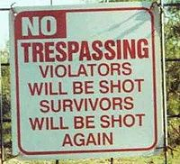

Región de Murcia
 De: La Frikipedia, la enciclopedia extremadamente seria.
De: La Frikipedia, la enciclopedia extremadamente seria.
De la serie comunidades autónomas:
Región de Furcia
Lema: Ahora con un 27% más de retrogradismo, 21% de fascismo, y un 36% de hipocresía... Murcia, sin estereotipos...
Himno: ¡¡¡¡¡¡¡¡¡¡¡Murcia, Murcia ke bonika es, axo pijo es ke no la ves!!!!
Idiomas: Panocho, murcianoparlante
| [[Imagen:|frameless|center]]
|
| Mapa
|
| Capital
|
Murcia (Cartagena es PUEBLO)
|
| Gentilicio
|
Murcianiko
|
| Superficie
|
11 313 km² urbanizables
|
| Amiga de
|
Gente de derechas TM
|
| Enemiga de
|
Progreso
|
| Población
|
1.000 milloncejos
|
| Fiesta oficial
|
El bando la güerta
|
|
|
Pedro Antonio I - l'imputao
|
La mayoría son aprobaos
La Región de Murcia es una región de Pedro Antonio I - l'imputao, es una región con una sola provincia la cuál acapara el 90% de los presupuestos generales ésta provincia es Blanca, La Albatalia, Cuantapena, Lorca, Librilla, Totana, Caravaca de la Cruz, Jumilla , Cieza, Los Belones, Ceutí, Molina de Segura y Archena. Actualmente el único municipio presente que desea ser habitante de la Región de Murcia es Murcia, los demás intentaron separarse y sólo recibieron a los nacionales para darles un palizón, el único que en su día pudo (gracias al poder de la vara) fue Albacete que cuando vió al generalísimo Pedro Antonio I - l'imputao salieron por patas y otro que le ubican aqui pero no lo quiere ni regalao es Elx/Elche.
Orihuela sí los quiere, pero sólo hasta que hagan el IKEA de Alicante.
Actualidad murciana
Murcia ha pasado a la historia de la literatura fantástica , "La invasión de los murcianos" un best seller del género cuenta como los murcianos invaden la tierra. Los nuevos avances tecnológicos han demostrado que no puede existir vida en murcia, por lo que los murcianos como tal existen.
La Región dicen las malas lenguas que cuenta con habitantes (todos extranjeros, ya que no hay murcianos) y viven en la parte de Murcia de la huerta, pero a causa de que el agua que viene del Río Segura está contaminada y la usan para los campos de golf la economía de la Región de Murcia ha bajado muchísimo.
Hace unos años (cuando estaba el PePe de José María Aznar según Rajoy 15 años) el generalísimo Varcárcel se iba a traer el Ebro hacia el Río Segura para que se mezclara con el agua contaminada del segura pero cuando llegó Chucky (José Luis Rodríguez Zapatero) al poder de España se quedaron sin agua de manantial. Chucky construyó unas dañinas y maléficas desaladoras de agua que ahora con Rajoy resultan ser lo mejor de lo mejor, Actualmente, malvados astures han grabado un vídeo de 1:17 minutos en el que se ve un grifo echando agua continuamente con un cartel al lado que pone "JODEOS, MURCIANOS" (aunque se ve que ellos son tan gilipollas que gastan su tiempo en hacerlo)
Actualmente se está tocando el Estatuto de Autonomía de Murcia pero la única modificación que consta de 201 artículos de los cuales 200 tienen repetida la misma frase: "Dame agua, idiota" y el último dice: "Para que una diputación o municipio se pueda independizar necesitaría las firmas de todos los ciudadanos" (para que no se le escape ninguno).
Polaris World hará un nuevo campo de golf de los miles que hay sin necesidad de riego
La lengua que se habla es el castellano aunque el generalísimo dice que se habla el murciano, un dialecto del castellano-andaluz aunque no está definido así, antes en la huertas se hablaba el panocho (un invento de cuatro frikis).
Murcia cuenta con una comunidad judia creciente debido a Polaris World donde han venido 354 familias judia de madrid barcelona y londres para jubilarse o vivir.[1]
Estatuto Murciano
Conscientes de la importancia que el estatut está teniendo estos días, los murcianos han diseñado un estatuto que pronto enviarán al gobierno central.
REFORMA DEL ESTATUTO DE AUTONOMÍA DE LA REGIÓN MURCIANA
Preámbulo
MURCIA QUÉ HERMOSA ERAS:
Murcia, ejerciendo el derecho que le reconoce la constitución manifiesta su voluntad de constituirse en Reino Independiente las terceras semanas de mes.
En esta hora solemne en que Murcia recupera su libertad, rinde también homenaje a todos los hombres y mujeres que lo han hecho posible.
Título preliminar: disposiciones generales
 Polaris World y su seguridad
- Murcia es un Imperio, o por lo menos vale como 2.
- Para que no se cabreen los Cartaginenses por decir tanto "Cartagena pueblo, Murcia Capital, lolololo...", la Asamblea Imperial se situará en Cartagena, gobernada por Valcárcel I de Bruselas, cuya residencia es el Parlamento Uropeo.
- El Imperio murciano está compuesto por los territorios actuales más los que se reclaman por razones históricas como en justicia son, Orihuela, Torrevieja la Vega Baja hasta Guardamar, La Torre de la Horadada, Hellín , naciones bañadas por el trasvase Tajo-Segura, la totalidad de la provincia de Albacete, las poblaciones de Tenerife, Trípoli, Beijing, José Vélez y Cartagena de Índias, la alberca, y todo lo que le rodea osea la peninsula Iberca, Francia, Europa y Asia, pero claro si contamos con que los pesqueros murcianos le dan la vuelta al mundo unas 3 o 4 veces al dia, pues podemos sumarnos al imperio las tierras de America, Africa, Oceania y la isla de Perdidos (lost)los cientificos murcianos creen que para el 2025 llegaremos a la luna y marte y el sol, pero como no tenemos super bronceador...
- Escudo. Nuestro escudo estará compuesto por la figura un ladrillo del 6 escoltado por cuatro campos de golf y en sus vértices cuatro plantas desalinizadoras sin inaugurar.
- Himno. El Himno de Murcia a diferencia del vecino país Ex Paña tiene letra pero no tiene música.
- Por el culo te la hinco.
- Serán ciudadanos de Murcia todos aquellos nacidos en el Reino de Murcia o en los territorios de ultramar (Isla Perdiguera) o en supermar.
- Lengua. La lengua oficial del Imperio es el Hispano-Panocho, todo murciano tiene el derecho y el deber de conocer su lengua. Las instituciones imperiales promoverán su uso y serán especialmente escrupulosas de que en dicha lengua vengan traducidos los billetes de banco, entradas de fútbol y los tikes del Mercadona. Los que no sepan hablarla irán a clases los martes y jueves después de comer.
- En el proceso de normalización lingüística de nuestro idioma se eliminará la grafía "g" que será sustituida por la jota, llamada, a partir de ahora, "jota murciana" se eliminan todas las "s" del final de las plabrah, deberian ser sustituidos por una h, pero como no hay ganas no se pone la h. En realidad es andaluz pero como si lo hablara un drogadicto pijo.
- La bandera. Murcia tendrá dos banderas, una azul celeste y otra negra que se usarán respectivamente de día y de noche para no ser vistas.
Título primero
- Financiación. El tesoro imperial será sufragado por un impuesto inversamente proporcional a la riqueza de sus súbditos así como por un canon sobre el champú y el papel higiénico y solidariamente por lo que le sobre a Cataluña.
- Con la aprobación de este articulado se colman las reivindicaciones históricas de Cartagena y así pues por fín CARTAGENA ES UNA PROVINCIA a cambio de encargarse de la limpieza del Rio, sin discriminación sobre el resto de las que componen el Imperio murciano.
- Todas las provincias dependen orgánicamente de Murcia capital como capital del Imperio, incluida Cartagena, que no tendrá su propio imperio independiente de Murcia.
- La Asamblea es la cámara de representación de todos los murcianos y estará constituida por un solo escaño.
Título segundo
- Moneda. La moneda del imperio es el Valcárcel, divisible a su vez en piezas de menor valor, así 1 Varcárcel equivale a 100 Mariantonias , 1 Mariantonia equivale a su vez a 5 Collados.
En el anverso se conmemora el pastel de calne murciano, y en el reverso la j̶e̶t̶a̶ insigne efigie de Valcarcel I (Las dos imágenes, al ser perfectamente redondas, encajan perfectamente en la moneda).
- La unidad de medida es el metro urbanizable.
- El metro urbanizable se divide en 10 miajas. La unidad fraccionaria de la miaja es la miajica, también llamada chispitiquia. Es decir, son lo mismico. NUNCA NAIDE HA SABIDO LO QUE EQUIVALE UNA TAHULLA
- La Narbona cúbica es la medida de capacidad. La Narbona cúbica se mide al revés. Ejemplo: un pantano lleno es igual a 0 narbonas, un pantano vacío es igual a una panzá de narbonas.
- El imperio murciano protegerá el Río Segura para evitar trasvases desde éste a otras cuencas. El Segura pasa a ser navegable hasta Cieza. Excepto los dias de lluvia, donde las empresas murcianas aprovechan para decorarlo con
vertidos radiactivos la fiesta de la espuma para los bañistas.
Disposiciones adicionales
- El poder en el Imperio murciano emana del pueblo. El pueblo emana de Prima y la Prima Hemana. ya hace años no vive en el pueblo.
Transporte Público y Comunicaciones
La Región de Murcia tiene grandes comunicaciones, sobre todo de Alcantarilla a cualquier lugar.
- Autobuses Latbus: 2 ó 3 líneas: dirección Murcia-Altorreal Golf Resort cada 2 minutos, dirección Alcantarilla-Hospital cada 1000 fallecimientos en la parada. Por su económico precio está enfocado a ejecutivos, y millonarios.
Equipación de los autobuses: 1.- Diseño ergonómico para minusválidos y ancianos que consiste en escalones de un metro de alto. 2.- Hilo musical (todos los buses tienen a su cani sujetando un móvil con Camarón a toa ostia que recibe la energía mediante la nueva conexión PAL (Pie en Asiento de al Lado)
- Hay otra línea de autobús alternativa a la de Latbus hacia el hospital para casos más urgentes (de vida o muerte) como dolores de cabeza, de muelas, o cuando te cortas demasiado una uña y haces sshhhhh... o vísperas de un Madrid-Barça. Es gratuíta, les llamas al 112 y te recogen en tu casa.
- Trenes Renfe: Para emigrar hacia Alicante, hasta que construyan la línea AVE Las Tejeras (Alcantarilla) - Madrid No para en Murcia. También hay una línea férrea intermitente que cada 20 años conecta o desconecta a Almería.
- Taxis: Para que la clase obrera se traslade hacia su puesto de trabajo. Es el único medio en la región antes de las 12 del mediodía.
- Otros: Bicicletas sin llantas, coches de alta gama que se embargan a los 2 ó 3 meses que luego son adquiridos por gente que cobra el subsidio pero tiene unos chaléts impresionantes, un tranvía hacia instalaciones de máxima necesidad como los centros comerciales, etc...
- Teletransportación: Tecnología de teletransporte de Star Trek la cual transporta a los murcianos en un abrir y cerrar de ojos: 2 líneas: Bar 2:00am - Casa 14:00pm y la otra línea es Los Pisos - Hospital (para hacer el alto a ésta última hay que gritar "Ma cago'n to tus muertoh pisaoh")
Medios de comunicación
Televisión:
4 canales públicos:
- Canal 9, Canal murciano en el que hablan en
asqueroso catalufo y que sólo valía en los 90 para ver Bola de Dragón y el show de Monleón. Años después pagó la exclusiva de emisión de la Fórmula 1, que la gente veía en la publi de laSexta. Hoy en día es todo un compendio de manipulación información.
- Canal 9 HD: Como emite por el mismo canal de UHF que Nitro, no se ve ná.
- La 7 noladeTelecincolaotra, que tuvo dos etapas, 1.- la de traer grandes periodistas y presentadores (ese de OT, ese de Cifras y Letras, el Sobera, ese que le hacía la pelota a Ana Rosa, etc...) con sueldazos DEL COPÓN y chalés en Altorreal, emitiendo Champions League, y hablando de tó menos de Murcia. y 2.- La etapa de emitir
auténtica mierda grandes programas que desafortunadamente llevaron la cadena pública a la quiebra. Menos mal que Valcárcel I la privatizó y se la dió a una empresa pepera independiente cuyo consejero es un portavoz del PP de la Época de Aznar independiente.
- La 7 noladeTelecincolaotra en HD
Canales privados:
- Popular tv: Variada información (UCAM, UCAM Murcia, UCAM tv, UCAM CB Murcia, UCAM, y la misa)
- TVM.
- Y diversos canales privados que son una
puta mierda referencia en teletiendas educación, tarot pluralidad y porno información local. Destacan los cuatro canales de la tv pública española llamados TV NACIONAL 1,2,3 y 4.
Radio:
- Aunque hay variedad, los murcianos escuchan las notícias de actualidad y económicas en Radio Marca.
Piriódicos
- Aunque el más vendido es 20minutos, el más leído es la publicidad del Media Markt.
- Además hay otros de
la misma variada línea editorial como La Verdad, La Opinión, y La Razón.
Hechos sobre los murcianos:
- El murciano no dice dame un poco: Dice dame una chispa o una Miaja. (o dame argo payo)
- El murciano no dice hola: te dice 'eih' o 'wenah'
- El murciano no se cae: se mete una piña / se pega una ostia o un ostión
- El murciano no tiene dinero: tiene perras (o 'perraeh') / billetes (o 'billetaeh') / o monedas (¡monéah')
- El murciano no se enamora: está enchochao perdio/ colao por una paya.
- El murciano no insiste: Te come la cabeza / te da el follón/ te da por culo.
- El murciano no se lanza: Se tira
- El murciano no besa: Te come la boca/ te come to el morro/ te morrea.
- El murciano no tontea con una chica: hace el pavo con una paya.
- El murciano no bebe mucho: se pone to ciego / se pone hasta arriba/ se chispa.
- El murciano no es que no entienda: está empanao/ está lilo.
- El murciano no molesta: es cansino, porculero y tocapelotas
- El murciano no te golpea: te mete una pasá de/somanta palos
- El murciano no trabaja a tiempo parcial: ta currando
- El murciano no tiene amantes: tiene una pareja con muchos cuernos
- El murciano no se impresiona: flipa / se queda muerto / se queda to loco
- El murciano no orina: se mea
- El murciano no sufre de diarrea: se caga por la pata abajo / se va por la patilla
- El murciano no tiene miedo: se giña / se caga en los pantalones
- El murciano no se va del lugar: se larga / se las pira / jopa
- El murciano no duerme: se queda torrao / sobao
- El murciano no dice "Adios": Dice "ta luego" / "talué" / "andá con dióh"
- El murciano si te dice algo que le importa añade "Te lo digo pa que lo sepas"
- El murciano no se rie a carcajadas: se descojona / se parte el culo / se despolla
- Al murciano no le causan problemas: le joden la vida / le tocan lohº cojones
- El murciano no es un presumido: es un flipao de mierda
- El murciano no es guay: es viciante / es muy de puta madre / o es la hostia
- El murciano no es un insensato: es un perdio / esta colgao / o no tiene cabeza
- El murciano no es buena persona: es buena gente / una persona muncho maja
- El murciano no es un tipo tranquilo :tiene unos güebos que se los pisa; y si es murciana: tiene un coño que se lo pisa / o vaya seta que tiene
- El murciano no es despitado: esta empanao
- El murciano no hace algo mal: la caga / la jode / la lía
- El murciano no habla claro: te dice las cosas a la cara
- El murciano no es valiente: tiene güebos
- El murciano no miente: mete trolas / y embustes
- El murciano no se lia: se emparanoya / se amontona/ o se queda to loco
- El murciano no esta cansado: esta reventao / molío / hecho mierda
- El murciano no es un mal amigo: es un mierdah
- El murciano no es falso y ruin: es un julay
- El murciano no ve a una chica fea: ve un cardo borriquero
- El murciano no te dice que estás equivocado: te dice que las cagao
- El murciano no se enfada : se pica o se encabrona
- Al murciano no le sale algo mal: se le va tó a la mierda / se le ha jodió to/la caga.
- El murciano no es sencillamente genial: es la caña/ostia / un bestia/ un tanke
- El murciano no es tacaño: es un rata
- El murciano no es bueno haciendo algo: es un maquina
- El murciano no habla demasiado: se enrolla que te pasas / paece una radio / no se calla ni hinchao a palos
- El murciano no es tonto: es lelo / más tonto que una mierda / o más tonto que un pijo
- El murciano no hace el loco: está achotao perdío / o va puesto
- El murciano no siente asco: siente rebustio/ está repugnao
- El murciano no se va corriendo: sale por patas
- El murciano habla con muletillas tales como: acho, tío, joder, anda
- En Murcia los TACOS NACIONALES son "él /un PIJO" y "él /un COÑO" y también la variación de cehegin de "PIJO EN DIOS" , "EL COPON" Y "EL COPON DE BULLAS" o "EL COPETÍN DE BULLAS"
- Si eres Aguileño diras siempre "miraaaaaaa" a to.
- El agua del Segura...donde coño esta?
- El murciano si escucha o te dice algo "curioso" al instante te puede preguntar: ¿ aoíoé ?
- El murciano no vomita:pota o echa la raba.
- El murciano no estorba: da porculo/toca los huevos.
- El murciano no te fastidia a todas horas: tiene una envidia de cohjoneh/ da porculo/ te jode la puta vida .
- En Murcia no hay verano: hace una caloh de cohjoneh/ hay un bochorno que la mierda se tace líquida.
¿Sabías qué...?
- ...? no.
- ...la hoja del paparajote no se come, tonto'l pijo?
- ...el murciano es como un andaluz pero con discapacidad para mover la lengua y pronunciar correctamente?
- ...Murcia fue fundada por un mojamé andaluz de Córdoba?
- ...en la huerta del Segura, cuando ríe una huertana, resplandece de hermosura toda la vega murciana?
- ...el murciano es una mezcla de andaluz, catalufo y castellano?
- ...el murciano sueña tanto con ser andaluz que imita en todo lo que puede a sus vecinos andaluces?
- ...el murciano prenuncia mejoh el ingléh que lepañol?
- ...en verano el edificio más lleno de Murcia es El Corte Inglés por el aire acondicionado?
- ...Cartagena pueblo, Murcia Capital?
- ...Murcia y Herculés, la última más mierda es?
- ...los Cartagineses son la misma mierda que siempre?
- ...los alcantarilleros viven en Puerto de Mazarrón?
- ...Murcia es la ciudad donde vives Leprucio y El Yayo? ¿y Antonio Hidalgo?
- ...el Cacagena F.C es peor que el Murcia aunque este vaya por abajo?
- ...el Ciudad de Murcia nunca existió y está en tu mente?
- ...hay agua para todos menos para los
campos de golf murcianos?
- ...Scylla se encuentra enterrada en un campo de golf murciano?
- ... hay mas guiris en archena que en toda inglaterra ¿tu saber donde estar balneario??
- ...Con los 200 millones de leuros que ha costado el aeropuerto
peatonal internacional se podría traer 200 millones de botellas de Bezoya (de la cara) de a litro?
- ...El profesor e investigador de estereotipos murcianos Vladimir Karabatic tiene un hermano gemelo contertulio del programa "Queremos Opinar" de la cadena de Metropolitan TV que emite en Murcia?
- ...Taxo yo estoy por irme a mi casa?
- ...habita un tal Andrés Borja, el mayor psicópata y asesino en serie jamás conocido?
- ...Tira gitano, a ti ni agua?
- ...La Paramount quiere hacer en Alhama de Murcia un parque de atracciones? Sí, en el puto culo del mundo.
Autor(es):
- Krusher
- Fordus
- Zeysoft
- Teletubie
- Haakjvork
- Mober
- Fem
- Sensoker
- JacintoCanek
- Doctor grijander
Frikipedia 2005-2016, Licencia
GFDL 1.2 - Extraído por FrikiLeaks